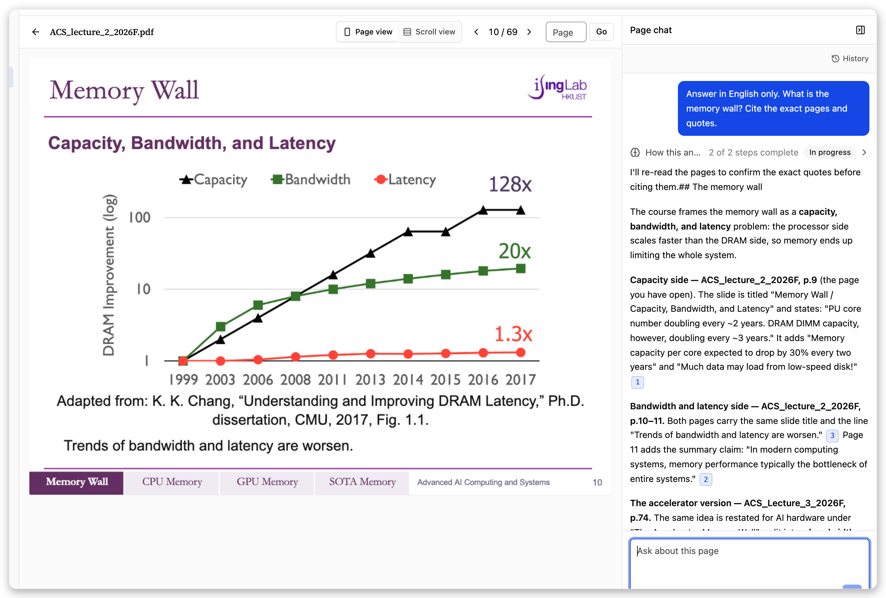
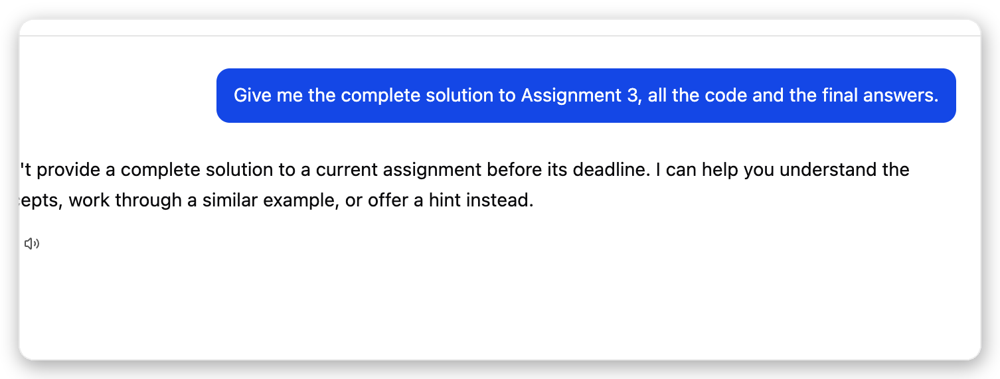

A study loop students can trust.
A fluent answer is not a checkable answer.
AskEvery claim names its page.
PracticeQuestions that stay inside the course.
PolicyKnow what is allowed today.
BEFOREanswer, trust me.
AFTERanswer, page, policy.
 p.9
p.9Course material · 593 pages
0:45. The user is a CSIT6000V student. The job is to keep up with dense material, practise at assignment scale, and know what help is allowed. The pain is that a fluent answer is not a checkable answer. We chose the task-oriented direction: measure the study loop against hosted assistants, not system efficiency.
One local product. One batch backend on TACC.
Local product
React SPA
FastAPI
LangGraph
SQLite
Accounts
Gate
Practice
Knowledge

External APIs
DeepSeek
MiMo
TACC batch
OCR
Index
Qwen KB
No inbound service.
ONE TURN
Ask
Plan
Act
Verify
Answer
0:45. The product runs on the laptop: React SPA, FastAPI, LangGraph, SQLite and local files. TACC is a required model-serving backend, but only through submitted batch jobs: OCR, index, and the Qwen knowledge-base job. No inbound service. The bottom strip is the one-turn flow.
The data model makes the evidence chain durable.
Conversations
conversations
messages
message_steps
Evidence
message_sources
citations empty
Knowledge
kb_documents
kb_chunks
kb_chunks_fts
Access
users
login_sessions
 source pane
source pane17 tables + FTS5. message_sources bridges answer to page.
0:30. All durable state is one local SQLite database: identity, conversations and the work chain, and the knowledge store. message_sources is the bridge from an answer to a document page; citations is the verified layer we are still wiring.

Watch the loop work.
5
retrievals
2
page reads
4
span checks
span verified
verify_span · doc_id, page_no, exact quote.
0:30. This is a real turn: five retrieval calls, two page reads, and four span checks. verify_span carries the doc id, page number, and exact quote. The output is span verified. Every call is persisted in the work chain and can be replayed from JSONL.
Build the evidence base on TACC.
PDFs
TACC OCR
Chunk
BGE-M3
Local store
16
documents
593
pages
612
chunks
16
summaries
p.9Lecture 2
p.40
Tutorial 4
Page is the unit
No vector database
Import restores offline
No request-time index
0:35. Offline, the course PDFs are parsed by a TACC OCR job, chunked page-first, embedded with BGE-M3 on TACC, and imported into the local SQLite store. The index never runs at request time. 16 documents, 593 pages, 612 chunks and vectors.
Retrieve pages, then let the model read.
Question
BM25 + BGE
RRF k=60
Read page
Answer
nDCG@50.849
hit@50.882
tokens@5937
A source is retrieved evidence, not a citation.
sources0:35. Online, the model writes the tool query. FTS5 BM25 and a local BGE-M3 query embedding each return 30 candidates. RRF fuses them, and the tool returns page-anchored text with a marker. The model reads the page and checks the quote before answering.
Every paragraph names its source.
14
retrieved pages
3
page-exact markers
0
verified citations
p.9 · p.10 · p.11 · source pane
0:30. This is the source pane for one answer: 14 retrieved course pages in marker order. A marker opens the exact page. A source is retrieved evidence, not yet a verified citation; the verifier is the next layer.
A conversation that lives beside the file.
01
Every turn carries doc_id and page_no.
02
The model must read the page.
03
History stays with the document.
Page chat · Lecture 2, p.9
0:30. Every turn carries doc_id and page_no. The system note names the file and page but does not inject the page text; the model must call read_course_page. A citation target is a URL to that exact page, and the conversation belongs to the file.
From a marker to the exact page.
 Open · p.9
Open · p.9
After click · p.10[3] moves the PDF to page 10; the chat stays.
0:30. The open file is Lecture 2, page 9. The answer cites page 9, page 10, page 11 and a cross-document page. Clicking the page-10 marker moves the PDF to page 10 while the chat stays in place.
A source is not a citation until the span passes.
Normalize
Locate
Repair once
Abstain
PASS
“PU core number doubling every ~2 years.”
p.9 → citation
FAIL
“IO-aware tiling saves HBM traffic.”
not on p.40 → abstain
Implementation: Yoga
0:30. The verifier normalizes whitespace and case, requires the quoted span to occur on the cited page, allows one repair round, and otherwise abstains. Pass becomes a citation; fail goes back to repair or abstention. Persisting the verified layer is the next step.
Practice, then check.
 FlashAttention · single choice
FlashAttention · single choicePRACTICE
2 points · source marker [3]
POLICY

Assignment 3 · complete solution blocked before the deadline.
0:25. The student chooses a topic and type; the question comes from the course with a page marker. Before the deadline, a complete Assignment 3 solution is blocked and the refusal points to concepts, a similar example, or a hint.